1Inha University 2EMTOMEGA CO., LTD.
* Corresponding Author
Modern LED traffic lights use PWM (Pulse Width Modulation) for energy efficiency. When the PWM frequency mismatches with camera frame rates, captured videos show flicker artifacts.
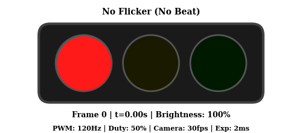
No Flicker (Normal)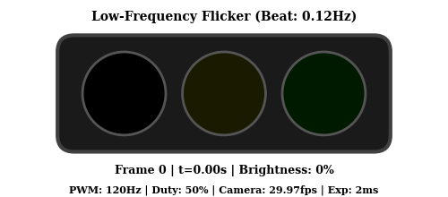
Low-Frequency Flicker (LFF)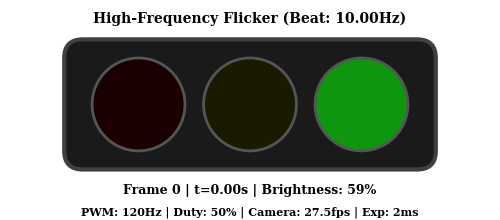
High-Frequency Flicker (HFF)Rapid on-off transitions across consecutive frames due to direct PWM-camera interference.
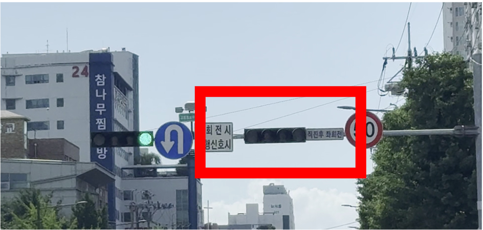
t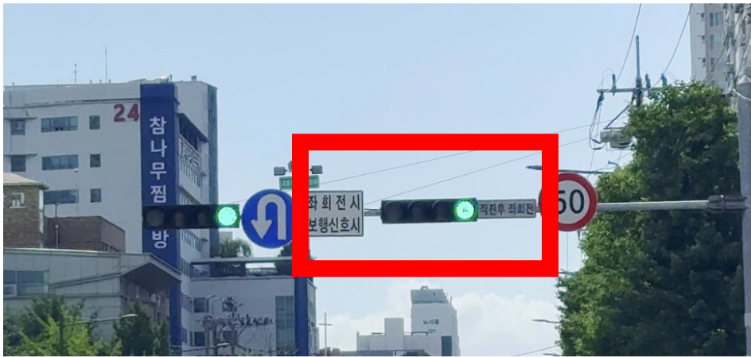
t+1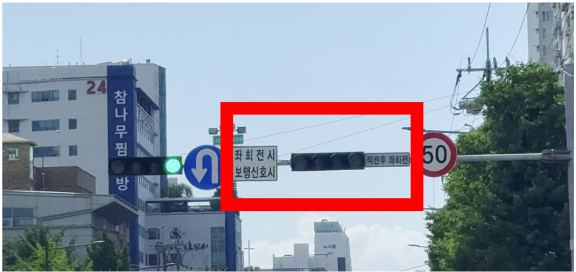
t+2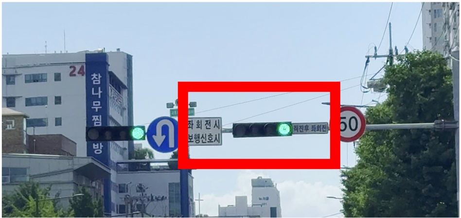
t+3Gradual brightness variations over tens of frames due to beat phenomenon.
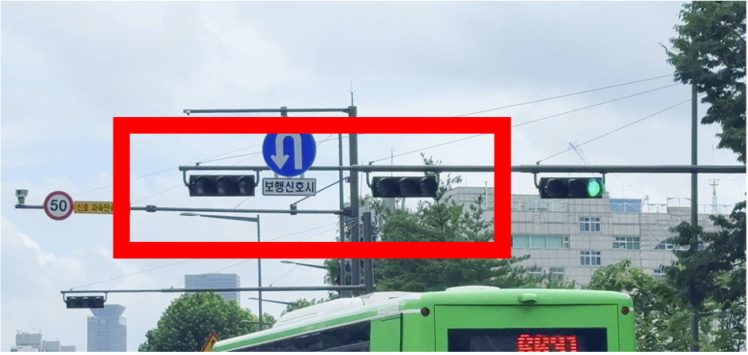
t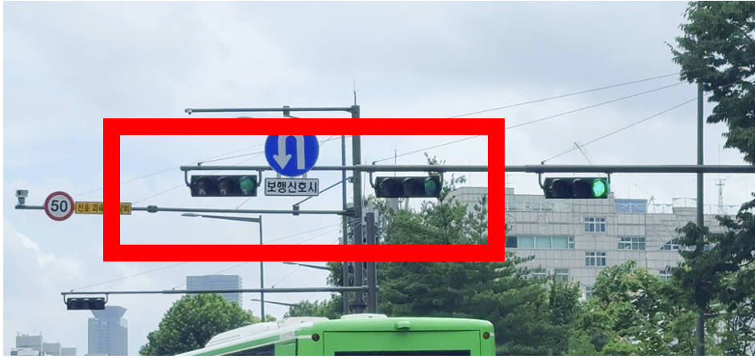
t+11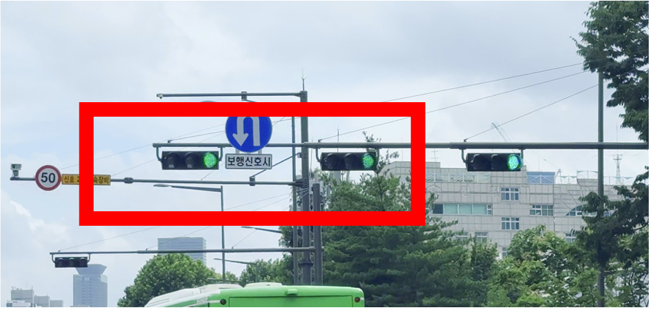
t+21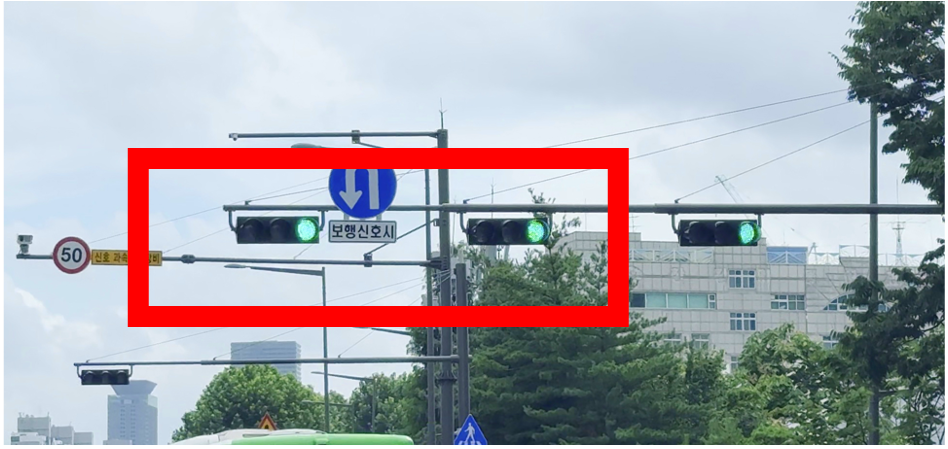
t+40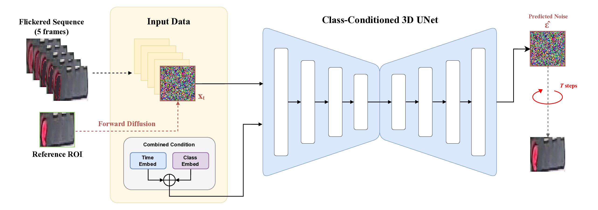
DiffuFlicker uses a class-conditioned temporal 3D U-Net with SDEdit-based adaptive restoration. The model takes 5 consecutive ROI frames as input, leveraging temporal context from preceding frames to restore the target frame. Two conditions guide the restoration: (1) a reference ROI from the brightest frame, and (2) a class embedding representing one of 8 traffic light states.
The system performs detection (with tracking IDs), classification (signal state labels), and segmentation (highlighted signal regions) on dashcam video frames.
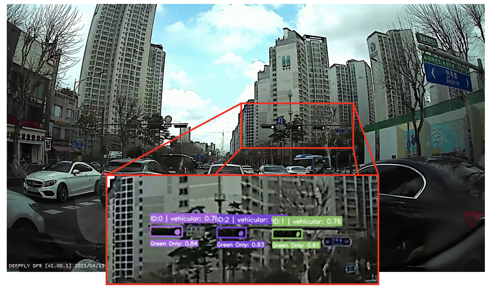
From top to bottom: Original (GT), Flickered input, FlickerFix result, DiffuFlicker result.
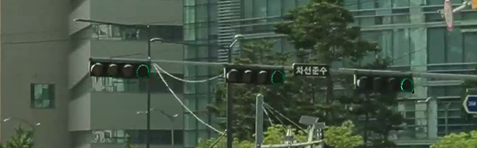
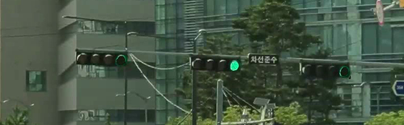
Video 1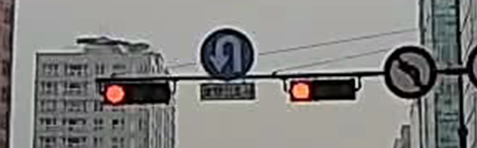
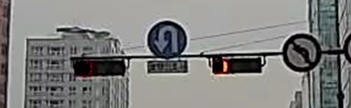
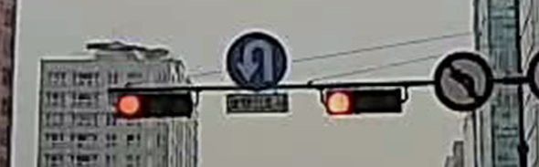
Video 2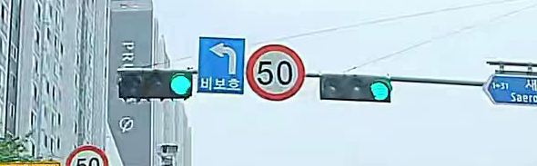
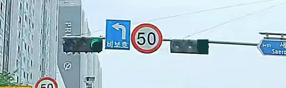
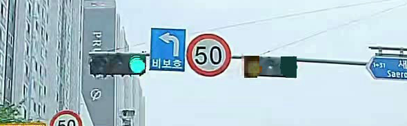
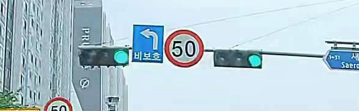
Video 3No ground truth available - qualitative comparison only. Consecutive 4 frames (t, t+1, t+2, t+3).